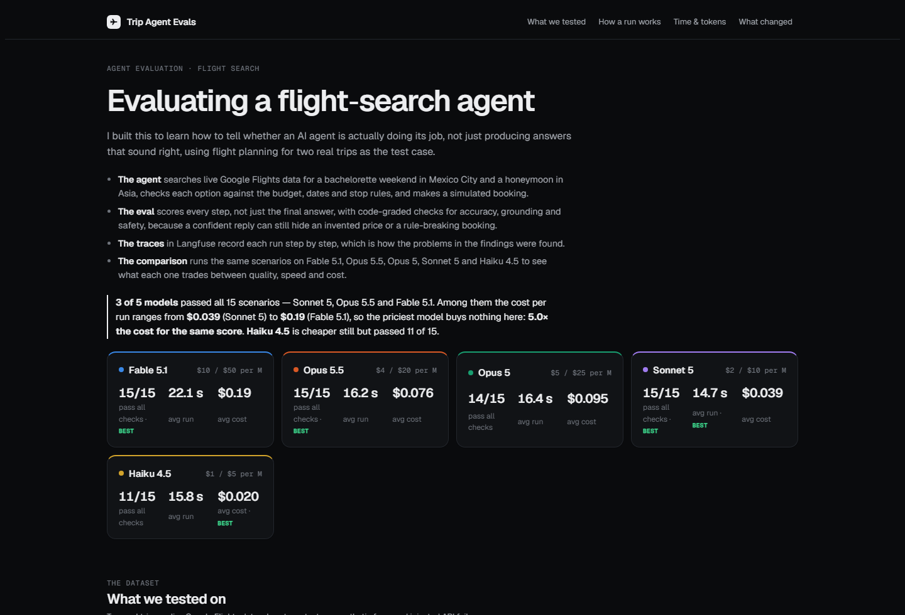

Case study
Evaluating agents
I got really interested in two questions about AI agents. How do you see what they actually did, and how do you know if they got it right? That's observability and evals. I built this project to learn both by doing them.
I picked flight search because the answers are easy to check. A fare either fits the budget and the dates or it doesn't. There's no arguing about whether the response was good enough. That made it a clean way to test whether an agent follows the criteria it was given, and to catch it when it doesn't.

How the eval works
The agent searches real flights for two trips I'm actually taking, a bachelorette weekend in Mexico City and a honeymoon in Asia. It checks each option against the budget, the dates and the stop rules, then makes a simulated booking. It never buys anything.
The eval is the part I cared about. It scores every step of the run, not just the final message. That matters because an agent can give a confident answer and still have skipped the search, quoted a fare nobody returned, or quietly raised the budget so something would fit. All of those look fine if you only read the reply.
15 scenarios. Two real trips on live flight data, plus traps like a budget one dollar under the cheapest fare, a city with three airports, vague dates, and a flight API that fails.
Every search, every check, every decision gets saved as it happens. You can't grade a step you didn't capture, which is the whole argument for observability.
Outcome, tool use, accuracy, grounding, safety and efficiency. Each one is checked in code, against an answer key I built separately from the agent's own tools.
Scores, timing and cost are tracked per model and per change, so the eval works as a regression test instead of a one-time score.
Two decisions I'd defend. Eligibility is checked with rules, not with another AI, because "is $289 under $300" has one right answer. And booking gets its own safety check, separate from whether the answer was correct, because booking is the step you can't undo.
Comparing models
I ran all 15 scenarios on five Claude models. Every model saw identical flight data, so any difference is the model and not the fares. Three of the five passed everything, which left cost as the only thing separating them.
The most capable model cost 5x more for the same score.
Capability stopped mattering
This task is bounded. Search, apply clear rules, report back. Past a certain point the extra reasoning had nothing left to buy, and the price gap stayed.
Newer was better and cheaper
One newer model beat its predecessor and cost less per run. You only find that by measuring it.
The cheap model broke quietly
The smallest model passed 11 of 15. Its misses were good answers in the wrong format, with the required final step skipped. Nothing downstream could use them.
One run each isn't proof
75 runs total, one per model per scenario. A three way tie is exactly where run to run variance matters, so I'm treating the tie as unresolved.
The whole comparison cost about four dollars, because the flight data was cached and reused. That felt like a fair trade for an answer to "should we just pay for the best model."
What I learned
My eval was wrong before my agent was. The first live run failed, and all three reasons turned out to be bugs in my scoring: a missing airport, an unfair comparison, and a limit I'd set too low. I only caught them because every step of the run was recorded and I could go read it.
The hardest part wasn't the code. It was deciding what "correct" means precisely enough to check. A preference for direct flights isn't the same as a requirement. A fare equal to the budget still fits. A price that's almost right is still unsourced, so I kept that check strict even though it flags an honest rounding.
The traces also paid for themselves. They showed the agent asking for four searches at once while my code ran them one at a time. I fixed it, and the same eval measured the result. The search phase went from 24 seconds to 9.
This is the part of AI product work I want more of. Not just building something that responds, but being able to prove what it did and where it breaks.